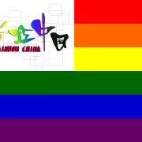

线下分享丨HIV的真爱之路：张锦雄与大学生谈情感关系
他，与「艾」共生二十载，现身超级演说家，为AI发声。
他，风趣幽默，普及艾滋知识，鼓励艾滋感染者勇敢走出来。
他，公益实践者，举办上百场艾滋拥抱活动，梦想着让所有人切身感受到「艾」与爱的力量。
他说，我们跟大家一样，可以吃自己喜欢吃的东西，穿自己喜欢的衣 服，跟相爱的人在一起，我们可以接吻，可以拥抱 ，共用一个杯 子，甚至有正常的性生活*，我们就是普通人。
张锦雄
97年开始“关怀爱滋”等的义工生涯
还记得6月张锦雄·Ken仔为我们带来的精彩讲座吗？
用顽强的生命诠释了一个灵魂的成长与蜕变
或许你很熟悉那个因“艾”公益的他
本次我们来听听他的“与 爱 同行”
本次分享内容：
“爱”
分享一 HIV阴阳恋的真爱之路
Ken仔也有一个谈了7年阴阳恋的男友，他们坚信真正的爱情不会输给艾滋病，听一听他们的爱情，感受更多世界的温暖。
分享二 大学生情感关系
Ken仔与你一起谈谈“如何爱与被爱”、“该如何谈恋爱？”、“大学时期的伴侣”等话题，有疑惑的你，记得带上问题与Ken仔交流哦！
分享三 “彩虹中国”的公益活动

“彩虹中国”以支援中国同志平权及艾滋防治工作；关怀弱势社群，救助无助同胞；推动建设平等丶公义和博爱的社会为宗旨。
Ken仔将会分享了自己的亲身经历，也用他从事公益多年来看到的故事来告诉我们什么是爱，什么是同理心，什么是公益。
本次分享安排：
时间：
10月17日（周一）晚
19:00 进场 19:30 开始 21:30结束
地点：
浙江大学玉泉校区 1897咖啡馆（近10舍）
费用：
免费，无需报名，进店直接听讲即可，店门口有彩虹旗标志指示